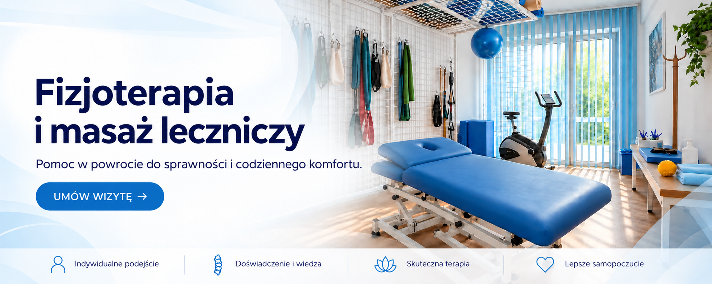

Masaż leczniczy
Masaż dopasowany do potrzeb i aktualnego stanu pacjenta.
Dowiedz się więcej →
Od lat pomagamy pacjentom zmniejszać ból, odzyskiwać sprawność i wracać do codziennych aktywności. Każdą terapię dobieramy indywidualnie, z troską o Twoje potrzeby i długofalowe efekty.
Poznaj naszą historię →Indywidualne podejście, doświadczenie i nowoczesne metody terapii pozwalają nam dopasować leczenie do potrzeb każdego pacjenta.
Kliknij „+” na wybranej karcie, aby poznać szczegóły zabiegu.
Masaż dopasowany do potrzeb i aktualnego stanu pacjenta.
Dowiedz się więcej →Techniki manualne dobierane do potrzeb układu ruchu.
Dowiedz się więcej →Ćwiczenia i wyciągi dobierane do możliwości pacjenta.
Dowiedz się więcej →Laseroterapia z promieniowaniem o niskiej mocy.
Dowiedz się więcej →Laseroterapia wysokoenergetyczna z urządzeniem HIL.
Dowiedz się więcej →Zabieg fizykoterapeutyczny wykorzystujący ultradźwięki.
Dowiedz się więcej →Miejscowe zastosowanie niskiej temperatury.
Dowiedz się więcej →Magnetoterapia o niskiej lub wysokiej częstotliwości, także z urządzeniem TERAPULS.
Dowiedz się więcej →Naświetlanie wybranego obszaru lampą Sollux.
Dowiedz się więcej →Zabieg z użyciem prądów aplikowanych przez elektrody.
Dowiedz się więcej →
Niezależnie od wieku czy poziomu aktywności, dobieramy terapię tak, aby wspierała Twój powrót do zdrowia i codziennej sprawności.
Masaż leczniczy to indywidualnie dobrana forma terapii manualnej, która może pomóc zmniejszyć napięcie mięśniowe, poprawić komfort ruchu i wesprzeć powrót do codziennej aktywności. Zabieg dobieramy do aktualnych dolegliwości, kondycji oraz potrzeb pacjenta.
Masaż może być pomocny przy napięciu mięśni, dolegliwościach związanych z pracą siedzącą, przeciążeniach po wysiłku oraz ograniczonej ruchomości. Stosujemy go również jako element szerszego procesu fizjoterapii, gdy celem jest rozluźnienie tkanek i poprawa komfortu funkcjonowania.
Każda wizyta rozpoczyna się od krótkiej rozmowy o dolegliwościach i oczekiwaniach. Na tej podstawie dobieramy obszar pracy, techniki oraz intensywność masażu. Terapia może obejmować okolice kręgosłupa, barków, karku, kończyn lub inne miejsca wymagające wsparcia.
Nie wykonujemy masażu według jednego, powtarzalnego schematu. Zakres terapii jest dostosowany do aktualnego stanu pacjenta i może być połączony z elementami terapii manualnej, ćwiczeniami lub zaleceniami do pracy w domu.
Chcesz sprawdzić, czy masaż leczniczy będzie odpowiedni w Twoim przypadku? Umów wizytę lub skontaktuj się z gabinetem.
Terapia manualna obejmuje indywidualnie dobrane techniki pracy fizjoterapeuty z mięśniami, stawami i innymi strukturami układu ruchu. Dobór metod poprzedzają rozmowa i ocena funkcjonalna.
Może zostać włączona do planu pracy z ograniczeniem ruchu lub dolegliwościami układu ruchu, jeśli po ocenie fizjoterapeuta uzna ją za właściwą. W zależności od potrzeb może być łączona z ćwiczeniami i wskazówkami do samodzielnej aktywności.
Fizjoterapeuta pyta o Twoje potrzeby, ocenia ruch i wyjaśnia proponowany plan. Następnie dobiera techniki oraz ich intensywność, informując, czego możesz się spodziewać podczas pracy.
Nie stosujemy jednego zestawu technik dla wszystkich. Metody są dobierane do wyniku oceny, a plan można zmienić, jeśli pojawi się taka potrzeba. Możesz w każdej chwili zgłosić swoje odczucia lub pytania.
Chcesz sprawdzić, czy terapia manualna będzie odpowiednia w Twoim przypadku? Umów wizytę lub skontaktuj się z gabinetem.
Ćwiczenia dobieramy do celu terapii, aktualnych możliwości i wyniku oceny funkcjonalnej. Jeśli jest to uzasadnione, plan wizyty może również uwzględniać pracę z wykorzystaniem wyciągu.
Indywidualny program może być pomocny, gdy celem jest stopniowa praca nad ruchem, siłą, koordynacją lub sprawnością potrzebną w codziennych czynnościach. Rodzaj i poziom trudności ćwiczeń ustala fizjoterapeuta.
Fizjoterapeuta pokazuje ćwiczenia, objaśnia ich wykonanie i sprawdza technikę. Jeśli w planie pojawia się wyciąg, wcześniej wyjaśnia jego rolę i sposób użycia. Przebieg jest dostosowywany do Twojej reakcji i samopoczucia.
Zakres, tempo i trudność ćwiczeń mogą się zmieniać w trakcie terapii. Otrzymujesz wskazówki dopasowane do swoich możliwości, a ćwiczenia domowe są proponowane wtedy, gdy pasują do ustalonego planu.
Chcesz ustalić, jaki plan ćwiczeń będzie dla Ciebie odpowiedni? Umów wizytę lub skontaktuj się z gabinetem.
Laseroterapia niskoenergetyczna to zabieg fizykoterapeutyczny wykorzystujący promieniowanie laserowe o niskiej mocy. Obszar zabiegu i parametry ustala fizjoterapeuta z uwzględnieniem używanego urządzenia.
Może zostać zaproponowana jako jedna z metod fizykoterapii po rozmowie i ocenie potrzeb. O jej przydatności nie decyduje sama nazwa dolegliwości — fizjoterapeuta bierze pod uwagę Twój stan zdrowia, cel terapii oraz ewentualne przeciwwskazania.
Przed rozpoczęciem fizjoterapeuta wyjaśnia przebieg, przygotowuje wybrany obszar i ustawia urządzenie. Zabieg oraz środki ochrony oczu są prowadzone zgodnie z procedurą dla używanego sprzętu.
Przed kwalifikacją możesz opowiedzieć o swoim stanie zdrowia i zapytać o każdy etap. Jeśli ta metoda nie będzie odpowiednia, fizjoterapeuta omówi inne możliwe elementy planu.
Chcesz dowiedzieć się, czy laseroterapia niskoenergetyczna będzie odpowiednia w Twoim przypadku? Umów wizytę lub skontaktuj się z gabinetem.
Laseroterapia wysokoenergetyczna (HIL) wykorzystuje urządzenie emitujące promieniowanie laserowe o wysokiej energii. Ustawienia, obszar i sposób prowadzenia zabiegu dobiera fizjoterapeuta.
HIL może być rozważana jako element fizykoterapii po ocenie potrzeb i stanu zdrowia. Przed kwalifikacją fizjoterapeuta sprawdza, czy ta metoda pasuje do ustalonego celu i czy nie ma przeciwwskazań.
Fizjoterapeuta omawia przebieg, przygotowuje wybrany obszar i konfiguruje urządzenie. Zabieg oraz stosowane zabezpieczenia, w tym ochronę oczu, są zgodne z procedurą dla używanego sprzętu.
Dobór parametrów i zakresu zabiegu zależy od indywidualnej kwalifikacji. W razie pytań możesz omówić z fizjoterapeutą swoje obawy przed rozpoczęciem.
Chcesz sprawdzić, czy HIL będzie odpowiednie w Twoim przypadku? Umów wizytę lub skontaktuj się z gabinetem.
Zabieg ultradźwiękami wykorzystuje fale akustyczne o częstotliwości poza zakresem słyszalnym. Fizjoterapeuta prowadzi głowicę urządzenia na wyznaczonym obszarze i ustala parametry zabiegu.
Ultradźwięki mogą być zaproponowane jako jedna z metod fizykoterapii, jeśli po ocenie fizjoterapeuta uzna je za odpowiednie. Nie każda dolegliwość ani sytuacja zdrowotna kwalifikuje się do tej metody.
Fizjoterapeuta wyjaśnia kolejne etapy, przygotowuje skórę i dobiera ustawienia urządzenia. W trakcie zabiegu głowica jest prowadzona po wskazanej okolicy zgodnie z przyjętą procedurą.
Przed zabiegiem omawiane są Twoje potrzeby i ważne informacje o stanie zdrowia. Jeśli ultradźwięki nie będą właściwym wyborem, można ustalić inny sposób postępowania.
Chcesz ustalić, czy ultradźwięki będą odpowiednie w Twoim przypadku? Umów wizytę lub skontaktuj się z gabinetem.
Krioterapia miejscowa polega na krótkim zastosowaniu niskiej temperatury na wybranym obszarze. Dokładna metoda i parametry zależą od używanego urządzenia oraz planu fizjoterapii.
O możliwości zastosowania zimna decyduje fizjoterapeuta po rozmowie i ocenie stanu zdrowia. Metoda nie jest odpowiednia dla każdego, dlatego przed zabiegiem omawiane są istotne informacje i ewentualne przeciwwskazania.
Fizjoterapeuta wyjaśnia, jak będzie wyglądało miejscowe chłodzenie, przygotowuje obszar i kontroluje przebieg zgodnie z procedurą. Jeśli odczuwasz nadmierny dyskomfort, poinformuj o tym od razu.
Obszar oraz sposób przeprowadzenia zabiegu są ustalane indywidualnie. Przed wizytą możesz zgłosić swoje pytania, a podczas zabiegu pozostajesz w kontakcie z fizjoterapeutą.
Chcesz sprawdzić, czy krioterapia miejscowa będzie odpowiednia w Twoim przypadku? Umów wizytę lub skontaktuj się z gabinetem.
W gabinecie dostępna jest magnetoterapia niskiej częstotliwości oraz zabieg z użyciem urządzenia wysokiej częstotliwości TERAPULS. Są to różne metody fizykoterapii, a ich ustawienia dobiera się do konkretnego zabiegu.
O tym, czy magnetoterapia może wejść w skład planu, decyduje fizjoterapeuta po rozmowie i ocenie potrzeb. Przed rozpoczęciem sprawdzane są również informacje o stanie zdrowia oraz ewentualne przeciwwskazania.
Fizjoterapeuta wyjaśnia, która metoda została zaplanowana, przygotowuje stanowisko i ustawia urządzenie. Przebieg zależy od wybranego rodzaju zabiegu i jest prowadzony zgodnie z procedurą sprzętu.
Rodzaj metody i jej parametry nie są dobierane automatycznie. Jeśli masz wszczepione urządzenie medyczne lub inne ważne informacje o zdrowiu, powiedz o tym fizjoterapeucie przed kwalifikacją.
Chcesz dowiedzieć się, czy magnetoterapia będzie odpowiednia w Twoim przypadku? Umów wizytę lub skontaktuj się z gabinetem.
Zabieg lampą Sollux polega na naświetlaniu wybranego obszaru z użyciem urządzenia dostępnego w gabinecie. Fizjoterapeuta ustala sposób wykonania zgodnie z celem wizyty i procedurą sprzętu.
Naświetlanie może być rozważone jako element fizykoterapii po rozmowie i ocenie potrzeb. Fizjoterapeuta uwzględnia stan zdrowia, obszar zabiegu oraz możliwe przeciwwskazania.
Przed rozpoczęciem omawiany jest przebieg i przygotowywane jest stanowisko. Ustawienie lampy, czas naświetlania oraz potrzebne zabezpieczenia ustala fizjoterapeuta zgodnie z procedurą urządzenia.
Zakres zabiegu dopasowujemy do indywidualnej kwalifikacji. Zgłoś fizjoterapeucie pytania, wrażliwość na ciepło lub inne informacje, które mogą mieć znaczenie dla komfortu i bezpieczeństwa.
Chcesz sprawdzić, czy zabieg lampą Sollux będzie odpowiedni w Twoim przypadku? Umów wizytę lub skontaktuj się z gabinetem.
Elektroterapia wykorzystuje prąd przekazywany przez elektrody umieszczone na skórze. W zależności od kwalifikacji zabieg może obejmować prądy TENS, interferencyjne lub diadynamiczne, elektrostymulację, jonoforezę albo galwanizację.
Dobór rodzaju prądu zależy od celu terapii, oceny fizjoterapeuty i informacji o stanie zdrowia. Nie każda metoda będzie odpowiednia dla każdej osoby, dlatego przed zabiegiem sprawdzane są również ewentualne przeciwwskazania.
Fizjoterapeuta wyjaśnia wybrany rodzaj zabiegu, przygotowuje skórę i umieszcza elektrody. Podczas zabiegu możesz odczuwać mrowienie lub pracę mięśni, zależnie od metody. Zgłoś fizjoterapeucie nadmierny dyskomfort.
Parametry są ustawiane dla konkretnej osoby i zabiegu. Przed kwalifikacją poinformuj fizjoterapeutę o ważnych kwestiach zdrowotnych, w tym o wszczepionych urządzeniach medycznych.
Chcesz sprawdzić, który rodzaj elektroterapii może być dla Ciebie odpowiedni? Umów wizytę lub skontaktuj się z gabinetem.